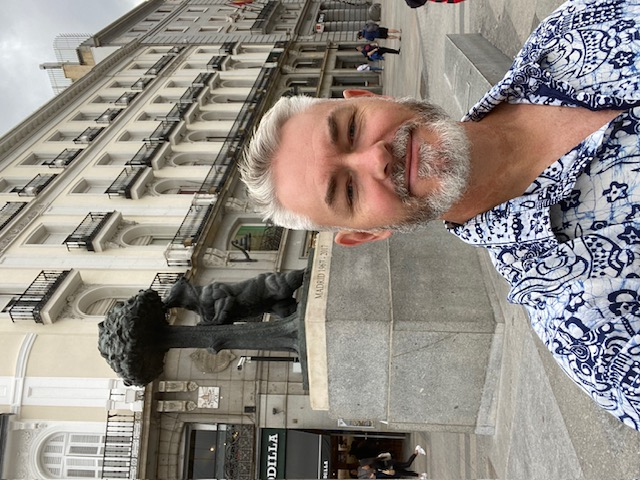

Sidney Bruis's CV
Na jaren met duizendsten millimeters in een fabriek, ben ik klaar voor kilometers en horizon-met dezelfde toewijding en focus !

Personalia:
- Sidney Alexandre Bruis
- Geboren op 29 December 1971
- Geboorteplaats Aix-en-Provence, Frankrijk
- Nederlandse Nationaliteit
- Woonplaats Leeuwarden
- Ongehuwd
Samenvatting van mijn Curriculum Vitae:
School en opleidingen
- Code 95 en Rijbewijs C via TOLO en Dinkla Rijschool Sneek Mei 2026
- Full Stack Developer via Udemy/LAB ( zelfstudie ) 2025-
- CNC Verspaner via Verder in Techniek 2021
- Avond opleiding Allround Verspaner Friesland College 2019-2021
- Basis diploma Beveiliging 1998
- Ster Bodyguard diploma 1997
- HAVO diploma 1995
- MAVO diploma 1993
Werk ervaring
- CNC Verspaner bij AMICON 2021-2023
- CNC Verspaner bij Metaal2000 2014-2021
- CNC Operator Intal 2013-2013
- CNC Operator Kloosterman Geveltechniek 2005-2013
- Productiemedewerker bij Halbertsma Pallets 2002-2005
- Geld loper bij Brinks via Securicor 2000-2001
- Parkeer controlleur in Amsterdam via Securicor 2000-2001
- Meubel controlleur/Exporteur in Indonesie voor FMS 1999-2000
- Nachtportier bij Hotel Het Stadhouderlijk Hof in Leeuwarden 1997-1999
- Allerlei werkzaamheden gedaan via Uitzend bureau's 1995-1997
- Winkelbediende in fotozaak van mijn familie op Aruba 1989-1990
- Supermarkt medewerker na schooltijd op Aruba (1986)
Skills
- Ik leer snel en graag
- Ik spreek vijf talen:
- Engels
- Spaans
- Nederlands
- Papiamento
- Indonesisch
- Klantgericht
- Stressbestendig
- Teamplayer met verantwoordelijkheidsgevoel
- In bezit van Rijbewijs A en B, en C
Other: